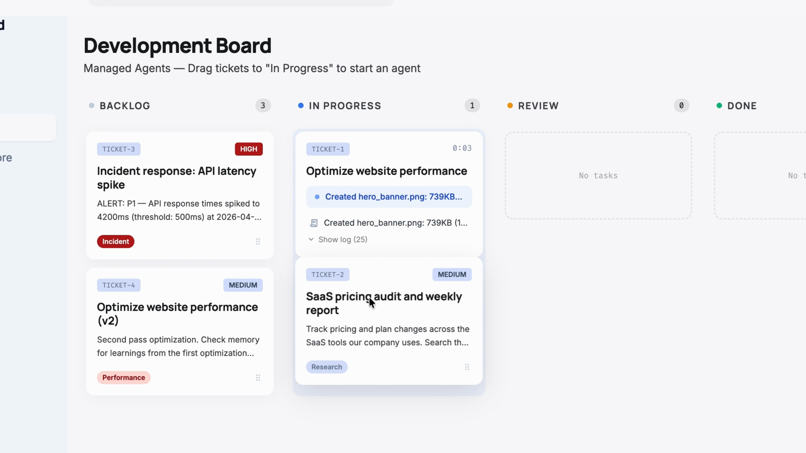
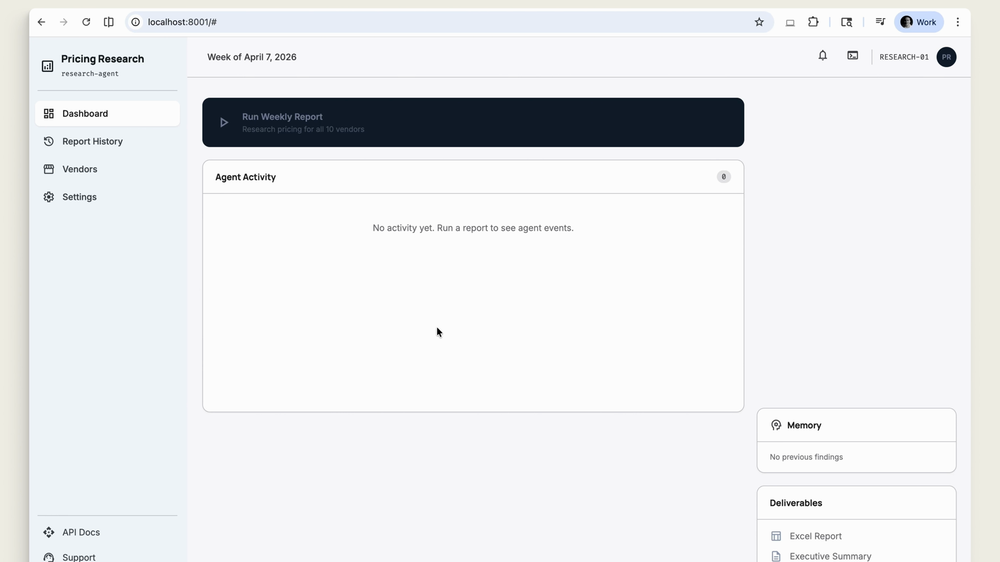
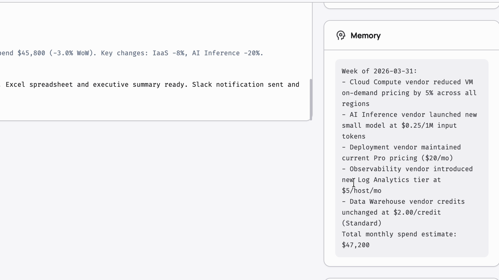
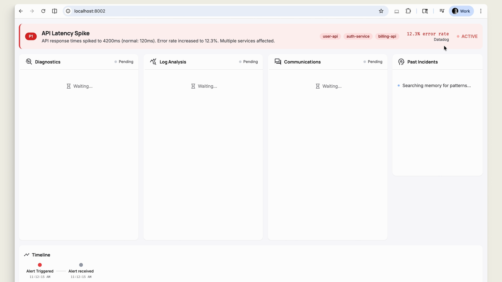

Что такое Managed Agents
Чему научитесь
Видео 4:06 и текст урока
К концу урока вы сможете:
- объяснить, что такое Claude Managed Agents и что значит «цикл агента размещает Anthropic»;
- перечислить строительные блоки Managed Agents — агенты, сессии, окружения, инструменты, MCP, память, outcomes и координацию нескольких агентов — и найти каждый в примерах урока;
- объяснить, как рубрика с отдельным грейдером доводит работу до заданного результата, а политика разрешений оставляет чувствительные действия за человеком.
Видео и текст урока.
Claude Managed Agents — набор API для создания и развёртывания агентов в больших масштабах. Вы определяете агентов с конкретными инструментами, персонами и возможностями. Настраиваете окружения-песочницы с нужными пакетами и правилами доступа к сети. А затем запускаете сессии из своего приложения, и Claude выполняет работу внутри изолированного контейнера, где есть полный доступ к файловой системе, выполнение bash-команд и веб-поиск.
Цикл агента, который размещают за вас
Под капотом это цикл агента: Claude рассуждает, вызывает инструмент, читает результат и повторяет всё это, пока работа не будет сделана. Если вы уже строили агентов, то, скорее всего, писали такой цикл сами. Managed agents берут тот же самый цикл и размещают его на инфраструктуре Anthropic, так что запускать его у себя вам не придётся.
Managed Agents находятся в отдельном разделе Claude Console.
Лучше всего понять, что это даёт, на нескольких примерах.
Пример 1: Kanban-доска, которая сама делает работу
Представьте Kanban-доску, работающую поверх managed agents. Вы перетаскиваете тикет в колонку «in progress», и это автоматически запускает сессию. Допустим, в тикете написано «optimize website performance» (оптимизировать производительность сайта). Вот что происходит:
- Ваш бэкенд создаёт сессию.
- Сессия ссылается на окружение (environment), которое вы настроили заранее: в нём уже установлены Lighthouse и Puppeteer.
- В контейнер монтируется ваш репозиторий GitHub.
Теперь у Claude есть кодовая база, инструменты и рубрика — описание того, что значит «готово»:
- оценка Lighthouse выше 90;
- нет ресурсов, блокирующих отрисовку;
- у всех изображений ленивая загрузка (lazy loading).
Claude запускает аудит, а затем начинает сжимать изображения, встраивать CSS в страницу и откладывать загрузку скриптов. Каждый вызов инструмента в реальном времени приходит на доску через поток событий (event stream), так что работу можно наблюдать по ходу дела.
Затем в дело вступает рубрика. Отдельный грейдер, работающий в собственном контекстном окне, оценивает результат по вашим критериям. Claude читает этот отзыв, возвращается к работе, исправляет то, что упустил, и сдаёт результат снова. В демо этот цикл поднимает оценку Lighthouse до 96.
И ещё одно: второй тикет можно перетащить, пока первый ещё выполняется. Две сессии, два контейнера, две отдельные задачи, которые идут параллельно.

Пример 2: регулярный исследовательский агент с памятью
А вот агент другого рода: его задача — следить за ценами и изменениями тарифов во всех SaaS-сервисах, за которые платит ваша компания, и готовить отчёт к стендапу.

При каждом запуске агент:
- ищет в интернете актуальные страницы с ценами, проверяет, не изменились ли тарифные планы, и отмечает новые функции, которые могут повлиять на ваши договоры;
- проводит анализ затрат в песочнице с помощью Python;
- использует skill для работы с таблицами Excel и пишет краткую сводку для руководства (executive summary);
- публикует ссылку в Slack и создаёт задачу на проверку в Asana — и то и другое через MCP-серверы.
Кроме того, агент читает хранилище памяти (memory store) и пишет в него. Перед началом он смотрит, что нашёл на прошлой неделе. Закончив, сохраняет, что изменилось. Поэтому в следующий понедельник отчёт может сообщить: «расходы на вычисления на 15% ниже, чем на прошлой неделе», а не перечислять каждый раз одни и те же статичные данные о ценах.

Пример 3: реагирование на инциденты несколькими агентами
Теперь представьте, что ваша система мониторинга выдала алерт. Ваш бэкенд получает данные алерта и отправляет их в новую сессию как сообщение пользователя. Если агенту нужно больше данных из системы мониторинга, он вызывает пользовательский инструмент (custom tool): ваш бэкенд выполняет его и возвращает результат в ту же сессию. В этой сессии используется координация нескольких агентов (multi-agent coordination):
- Агент-координатор получает алерт и распределяет работу между тремя специалистами.
- Каждый специалист работает в собственном контекстном окне, но в общей файловой системе.
- Специалисты отчитываются, а координатор объединяет их выводы в общую сводку по инциденту.

Прежде чем сводка уйдёт в Slack, срабатывает политика разрешений (permission policy). Вы видите черновик на экране, одобряете его, и сообщение отправляется. Чувствительные действия ждут человека.
Всё это связывает воедино память. Координатор просматривает прошлые инциденты в хранилище памяти и замечает закономерность: «похоже на проблему с DNS-резолвингом двухнедельной давности, которую вызвал неправильно настроенный TTL». Когда в следующий раз сработает похожий алерт, агент начнёт уже с этим контекстом, а не будет диагностировать всё с нуля.
Строительные блоки
Во всех этих примерах managed agents дают разработчикам всё необходимое для полностью управляемой работы агента с сохранением состояния (stateful). Она строится на таких блоках:
- агенты (agents) — определения с конкретными инструментами, персонами и возможностями;
- сессии (sessions) — отдельные запуски, которые вы стартуете из своего приложения;
- окружения (environments) — песочницы с нужными пакетами и правилами доступа к сети;
- инструменты (tools) — в том числе пользовательские инструменты на вашем бэкенде;
- MCP — подключения к сервисам вроде Slack и Asana;
- память (memory) — хранилище, которое агент читает перед началом работы и в которое пишет, когда закончит;
- outcomes (целевые результаты) — рубрики и грейдеры, которые задают и проверяют, что значит «готово»;
- координация нескольких агентов (multi-agent coordination) — координаторы, которые распределяют работу между специалистами.
Итог
- Claude Managed Agents — набор API для создания и развёртывания агентов в больших масштабах; работает он на инфраструктуре Anthropic.
- Он выполняет знакомый цикл агента — рассуждать, вызвать инструмент, прочитать результат, повторить — внутри изолированного контейнера, где есть доступ к файловой системе, выполнение bash-команд и веб-поиск.
- Сессии работают в окружениях, которые вы настраиваете, идут параллельно и в реальном времени передают вызовы инструментов обратно в ваше приложение.
- Рубрики и отдельные грейдеры позволяют задать критерии успеха; Claude повторяет работу, пока их не выполнит.
- Память, MCP-серверы, пользовательские инструменты, политики разрешений и координация нескольких агентов дополняют работу агента с сохранением состояния.
- Вы определяете, что значит «готово». Claude работает, пока этого не добьётся.
Дальше
Следующий урок — «Первый managed agent своими руками»: четыре примитива — агент, окружение, сессия и события — и самый маленький managed agent, собранный шаг за шагом.
Оригинал урока: What are managed agents?.